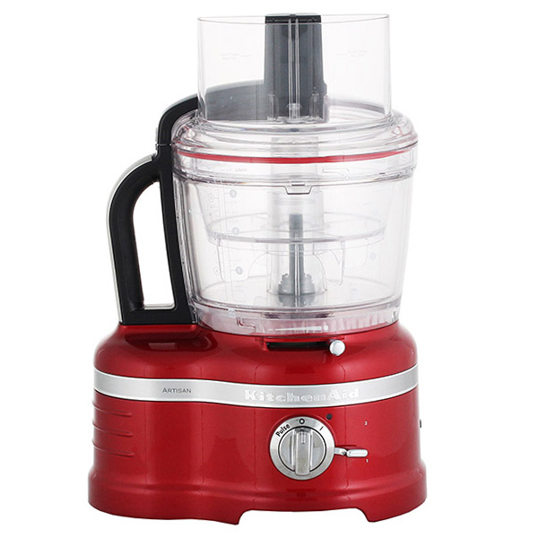

Кухонный процессор BORK B803 VS KitchenAid 5KFP1644ECA
Современная техника отличается от ретро тем, что экономит самое ценное на сегодняшний день – время. Ретро дизайн - это на любителя, а вот ретро технологии это вчерашний, а быть может и позавчерашний день.
KitchenAid 5KFP1644ECA
Преимущества KitchenAid, которые пытаются продать:
- Дизайн и выбор цветов
- Гарантия 3 года
- Компания, которая изобрела миксеры в1919 году
- KitchenAid переводится как кухонный помощник
- Регулировка толщины ломтика на корпусе комбайна
- Насадка для нарезки кубиками
Характеристики KitchenAid:
- Потребляемая мощность: 650 Вт
- Габариты: 45,7 х 30,4 х 24,8 см
- Вес: 13,6 кг
- Рабочая чаша: 4 л
- Подготовительная чаша 2,4 л
- Мини-чаша: 1 л
- Количество скоростей:2 + Pulse
- Толкатель с тремя секциями
-
Насадки:
Диск для нарезки ломтиками 6 положений 1-6 мм
Насадка для нарезки кубиками 8 и12 мм
Насадка тёрка двусторонняя мелкая/крупная
Насадка измельчитель сыр, шоколад, лёд
Насадка для нарезки брусочками
Насадка соковыжималка для цитрусовых
Два ножа измельчителя для большой и малой чаши
Нож для замешивания теста
Насадка для взбивания - Страна производитель: КНР
Преимущества кухонного комбайна BORK B803:
- Современный двигатель мощностью 1000 Вт с электронным стабилизатором оборотов позволяет сохранять заданные обороты насадок при работе с плотными продуктами
- Широкий диапазон (0,5 – 8 мм) и ювелирная точность нарезки (24 степени) помогут раскрыть вкус и обеспечат точное выполнение различных рецептов изысканных блюд
- Надёжность устройства регулировки толщины нарезки, обеспечит долгий срок службы и удобную эксплуатацию насадки для шинковки (у КitchenAid сложная система пластиковых рычагов и направляющих)
- Уникальная система ножей с четырьмя лезвиями QUAD BLADE равномерно измельчит продукты по всему объёму чаши
- Компактные габариты и небольшой вес комбайна (9,3 кг) позволяют не только удобно расположить устройство на любой современной кухне, но и при желании убрать в шкаф (комбайн KitchenAid имеет большие габариты и весит 13,6 кг)
- Комплектация комбайна BORK состоит из оптимального набора насадок для повседневного использования
- Комбайн BORK оснащён автоматическим устройством безопасности, которое предохраняет двигатель от выхода из строя и обеспечивает долгий срок службы комбайна
- Реальная цена отличного продукта
Покупая KitchenAid, вы покупаете не только ретро дизайн, но и ретро технологии.